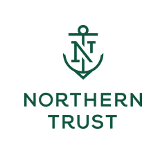
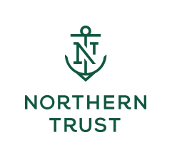
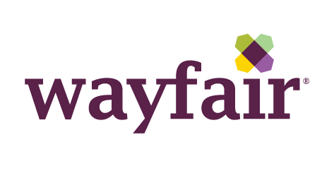
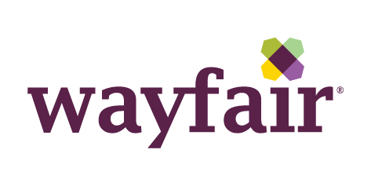
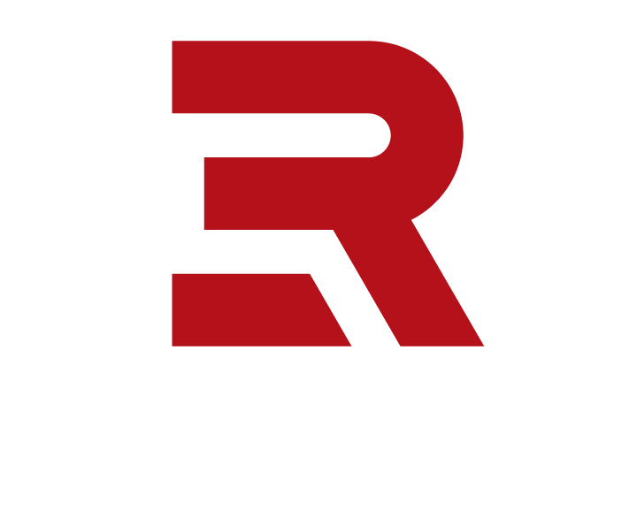
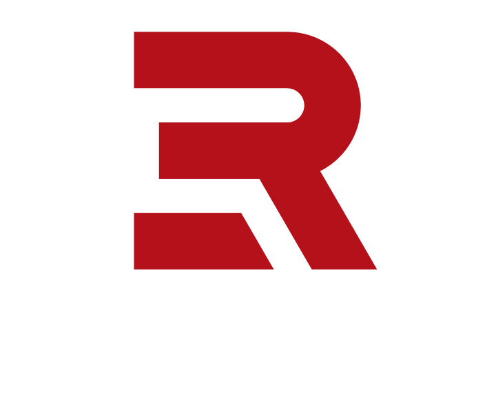

Reflections | Projections is a tech conference organized and run by students at the University of Illinois at Urbana-Champaign.
We draw students, speakers, and companies from around the world. Join us to listen to tech talks from across the industry, to participate in an Artificial Intelligence programming competition in Mechmania, to solve puzzles throughout the conference during PuzzleBang!, and to attend our job and startup fairs.
The conference is free and open to anyone regardless of age, major, job, or affiliation with the University of Illinois. So come join a discussion led by some of the brightest minds in the business about the bleeding edge of the tech industry!


If you wish to be involved with any parts of the conference, send an email to conference-chair@acm.illinois.edu
| 12:00pm - 1:00pm | Startup Panel |
| 2:00pm - 5:30pm | Startup Fair |
| 6:00pm - 6:50pm | Speaker: Ben Jun |
| 7:00pm - 8:00pm | Dinner |
| 9:00am - 10:00am | Breakfast |
| 10:30am - 4:30pm | Job Fair |
| 5:00pm - 5:50pm | Speaker: Ben Fathi |
| 7:00pm - 7:30pm | Dinner |
| 7:30pm - 8:20pm | Keynote Speaker: TBA |
| 9:00pm - 11:00pm | Alumni Event at Murphy's |
| 9:00am - 10:00am | Breakfast |
| 10:00am - 10:50am | Speaker: Santanu Kolay |
| 11:00am - 11:50am | Speaker: Laura Gomez |
| 12:00pm - 1:00pm | Lunch |
| 1:00pm - 1:50pm | Speaker: Nicole Hu |
| 2:00pm - 2:50pm | Speaker: Don Dini |
| 3:00pm - 4:00pm | Special Workshop |
| 4:00pm - 4:50pm | Speaker: Maesen Churchill & Grace Huang |
| 5:00pm - 5:50pm | Speaker: Clare Curtis |
| 6:00pm - 7:00pm | Dinner |
| 7:00pm - 7:50pm | Speaker: TBD |
| 8:00pm - 9:00pm | Mechmania Closing Ceremony |
Friday Keynote Speaker to be announced!

 



 



 



Interested in sponsoring? Contact us at corporate@acm.illinois.edu